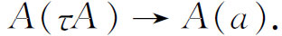

7．形式派
数学的第三种主要的哲学，称为形式派（formalist school），它的领导人是希尔伯特。他从1904年开始从事于这种哲学工作。他在那时的动机是，给数系提供一个不用集合论的基础，并且确立算术的相容性。因为他自己对于几何的相容性的证明已约化成算术的相容性，算术的相容性就成了一个没有解决的关键性问题。他还曾企图去战胜克罗内克的必须抛掉无理数的论点。希尔伯特接受了实无穷并且称赞了康托尔的工作（第41章第9节）。他想要保住无穷，保住纯粹存在性的证明，以及像最小上界这样一些概念，其定义似乎是循环的。
在1904年的国际数学会议上(18)，希尔伯特提出一篇文章论述他的观点。有15年他都没有再做这个题目；后来，由于要回答直观主义者对经典分析的批评，他才开始研究基础问题，并且在他后来的科学事业中一直继续这方面的工作。他在20世纪20年代发表了几篇关键性的文章。他的观点逐渐地获得一些人的支持。
他们成熟的哲学包含着很多学说。与这种新倾向一致，即数学的任何基础都必须注意到逻辑的作用，形式派主张逻辑必须和数学同时加以研究。数学有好些个部门，每一部门都有它自己的公理基础。它必定包含着逻辑的和数学的概念与原则。逻辑是一种记号语言，它把数学的语句表达成公式，并且用形式的程序表示推理。公理仅仅表示从公式得到公式的法则。所有的记号和运算符号在内容上都与它们的意义无关。这样，所有的含义都从数学符号上消除了。希尔伯特在他的1926年的文章(19)中说，数学思维的对象就是符号本身。符号就是本质；它们并不代表理想的物理对象。公式可能蕴涵着直观上有意义的叙述，但是这些涵义并不属于数学。
希尔伯特把排中律保留下来，因为分析需要它。他说(20)：“禁止数学家用排中律，就像禁止天文学家用望远镜或拳师用拳一样。”因为数学只讨论符号的表达式，全部亚里士多德逻辑的法则都可以用在这些形式表达式上。在这个新的意义上，无穷集合的数学是可能的。还有，希尔伯特希望，避免公开使用“一切（all）”这个词就可以避免悖论。
要用公式去表示逻辑的公理，希尔伯特引进了一组符号，来代表这样一些概念和关系，如“并且（and）”、“或者（or）”、“否定（negation）”、“存在（there exists）”等。碰巧逻辑演算（符号逻辑）已经被发展了（为了别的目的），因而希尔伯特说，他手头上已经有了他需要的东西。所有上述的符号都是构造理想表达式（即公式）的砖块。
为了处理无穷，除了通常的没有争议的公理外，希尔伯特用到超限公理

他说它的意思是，若谓词A适合于标准对象τA，它就适合于每一个对象a。例如，假使A代表腐败，如果“阿青天”［古希腊大政治家阿里斯蒂德（Aristides），被尊称为the Just］是标准的并且是腐败的，那么每个人都是腐败的。
数学证明是由这样的程序组成的：肯定一个公式；肯定这个公式蕴涵着另一个公式；肯定这第二个公式。一系列这样的步骤，其中所肯定的公式或蕴涵关系都是前面的公理或结论，这就构成了一个定理的证明。还有一个许可的运算，就是用一个符号去替换另一个或一组符号。这样，公式的推导就是，把操作符号的法则运用于以前已经建立了的公式上去。
一个命题是真的，必须且只须它是这样一串命题的最后一个，其中每一个命题，或者是形式系统的一条公理，或者是由一条推导法则所导出的命题。每个人都可以验证，一个给定的命题是不是可以由一串适当的命题得出来。这样，按照形式主义的观点，真理和严密就是确定的和客观的。
于是对于形式主义者来说，数学本身就是一堆形式系统，各自建立自己的逻辑，同时建立自己的数学；各有自己的概念，自己的公理，自己的推导定理的法则（如关于相等和替代的法则），以及自己的定理。把这些演绎系统的每一个都开展起来，就是数学的任务。数学就不成为关于什么东西的一门学科，而是一堆形式系统，在每一个系统中，形式表达式都是用形式变换从另一些表达式得到的。希尔伯特的方案中，关于数学本身的部分，就是这些。
然而我们现在必须问，这些推导是不是就没有矛盾呢？这是未必能在直观上看出来的。但是要证明没有矛盾，只须证明我们永远不会得出1＝2这个形式的语句。（因为由逻辑的一个定理，任何别的假命题都蕴涵着这个命题，我们只考虑这一个就够了。）
希尔伯特和他的学生阿克曼（Wilhelm Ackermann，1896—1962）、贝尔奈斯（Paul Bernays，1888—1977）和冯·诺伊曼在1920年至1930年间逐步地开展了所谓的希尔伯特的Beweistheorie［证明论］或元数学（meta-mathematics），这是确立任何形式系统的相容性的一个方法。希尔伯特提议，在元数学中要用一种特殊的逻辑，它应该是基本的，并且是没有异议的。它使用一种普遍承认的具体而有限的推理，很接近于直观主义的原则。不使用那些有争议的原则，诸如由矛盾去证明存在，超限归纳，以及选择公理。存在性证明必须是构造性的。因为一个形式系统可以是没有尽头的，元数学必须接纳这样一些概念和问题，它们牵连着至少是潜无穷的系统。但是，只能使用有限性的证明方法。不能涉及公式的无穷多个结构性质或无穷多个公式操作。
现在大部分经典数学的相容性，都能够化归到自然数的算术（数论）的无矛盾性，犹如这个理论大多概括在皮亚诺公理中；或者化归到一种相当丰富的集合论，足以给出皮亚诺公理。因此，自然数的算术的无矛盾性就成了注意的中心。
希尔伯特和他的学派，确实证明了一些简单形式系统的无矛盾性，并且他们相信他们就将实现证明算术和集合论的无矛盾性这个目标了。他在《论无限》（Über das Unendliche）一文(21)中说道：
在几何学和物理理论中，无矛盾性的证明是通过把它化归到算术的无矛盾性来完成的。这个方法明显地不能用于对算术本身的证明。因为我们的证明论……使得这最后一步成为可能，它就构成数学结构的不可缺少的基石。而尤其值得注意的是，我们已经受过两次事件——首先是在微积分的悖论中，后来是在集合论的悖论中——在数学的领域中不会再发生了。
但是随后哥德尔（Kurt Gödel，1906—1978）上场了。哥德尔的第一篇主要文章是《论数学原理（Principia Mathematica）一书中的形式上不可判定的命题以及有关系统Ⅰ》（Über formal unentscheidbare Sätze der Principia Mathematica und verwandter SystemeⅠ）(22)。在这里哥德尔证明了包含着通常逻辑和数论的一个系统的无矛盾性是不可能确立的，如果人们只限于运用在数论系统中可以形式表示出的概念和方法。实际这就是说，数论的相容性用元数学所容许的狭义逻辑是不可能确立的。对于这个结果，外尔说道：上帝是存在的，因为数学没有矛盾；魔鬼也是存在的，因为我们不能证明这无矛盾性。
上述哥德尔的结果，是他的更为惊人的结果的一个推论。这个主要结果［哥德尔的不完备性定理（incompleteness theorem）］说的是，如果一个足以容纳数论的形式理论T是无矛盾的，并且算术的形式系统的公理都是T的公理或定理，那么T就是不完备的。这就是说，有这样一个数论的语句S，使S和非S都不是这个理论的一个定理。因为S或非S总有一个是真的；于是就有了一个数论的语句，它是真的又是不可证明的。这个结果适用于罗素-怀特海系统、策梅洛-弗伦克尔系统，以及希尔伯特的数论公理化。这是有点讽刺意味的，希尔伯特在1928年波洛尼亚国际数学会议上的讲话中（看下文的第1个注(23)）曾批评过先前通过范畴性做出的完备性的证明，而他很确信自己的系统是完备的。实际上这些先前的证明牵涉到包含着自然数的系统，它们被承认为正确的，仅仅是因为集合论还没有被公理化，是在朴素的基础上使用的。
不完备性的不足之处就在于，形式系统还不足以用来证明所有在系统中可以做出的判断。损伤更兼屈辱，系统中存在着这样的判断，它们是不可判定的，但在直观上又是真的。不完备性是不能由添加S或～S作为公理来补救的，因为哥德尔证明了包括数论的任何系统都必定含有不可判定的命题。这样，尽管布劳威尔已经弄清楚了直观上明确的东西不及数学上证明了的东西多，哥德尔却证明了直观的正确会超过数学的证明。
哥德尔定理的一个涵义是，不仅是数学的全部，甚至是任何一个有意义的分支也不能用一个公理系统概括起来，因为任何这样的公理系统都是不完备的。存在着这样的语句，它的概念属于这个系统，它不能在系统之内证明出来，但是却可以用非形式的论证来证明它是真的，事实上是用元数学的逻辑。公理化的成就是有限度的，这个涵义与19世纪末的这种看法形成了尖锐的对比，即数学，与公理化了的各分支的总和具有相同的广度。哥德尔的结果给了内涵公理化（comprehensive axiomatization）一个致命的打击。公理方法的这个缺陷本身并不是一个矛盾，但却是可惊的，因为数学家曾经期望任何一个真的语句一定会在某个公理系统的框架中确立起来。当然，上述的论点并不排除新的证明方法的可能性，这种新方法将超出希尔伯特元数学所容许的范围。
希尔伯特并不信服这些打击摧毁了他的计划。他争辩说，即使要用到形式系统以外的一些概念，它们仍可以是有限的，并且在直观上是具体的，因而是可以接受的。希尔伯特是一个乐观主义者，他对人类的推理和理解的能力有无限的信心，他在1928年国际会议(23)上所作的讲话中曾经断言：“……对于数学的理解是没有界限的，……在数学中没有Ignorabimus［不可知］；更确切地说，我们总是能够回答有意义的问题的，……我们的理智并不具有任何秘密的技术，它只是按照十分确定的并且是可以说明白的法则行事，这些法则就是它的判断的绝对客观性的保证。”每个数学家，他说，都会同样深信，任何确定的数学问题总是可以解决的。这种乐观主义给他以勇气和力量，但却阻止他去了解可能有不可判定的数学问题。
形式主义的计划，不管成功与否，对于直观主义者都是不能接受的。布劳威尔在1925年冲击了形式主义者(24)。他说，公理化的办法、形式主义的办法，当然都会避免矛盾，但是用这种办法不会得到有数学价值的东西。一个错误的理论，即使没有因矛盾而告终，也仍然是错误的，正如一种罪行，不论法庭是否禁止都是有罪的。他还讽刺地说：“数学的严密在哪里，对这个问题，这两派给出不同的回答。直观主义者说，是在人类的理智中；形式主义者说，是在纸上。”外尔也攻击过希尔伯特的计划：“希尔伯特的数学或许是一种美妙的公式游戏，甚至比下棋更好玩；但是它与认识毫无关系，因为那是公认的，它的公式并不具有可借以表示直观真理的那种实在意义。”为保卫形式主义哲学，可以指出，把数学化成没有意义的公式，其目的只在于要证明相容性、完备性，以及其他的性质。至于数学作为一个整体，即使形式主义者也反对说它仅仅是一种游戏的这种思想；他们认为它是一种客观的科学。
希尔伯特也反过来攻击布劳威尔和外尔，说他们想要扔掉他们所不喜欢的每一件东西，并且专横傲慢地颁布一道禁令(25)。他称直观主义是对科学的一种背叛。（可是在他的元数学中，他却把自己局限于直观上明确的逻辑原则。）